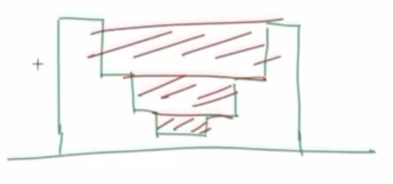

42. Trapping Rain Water
Question
Given n non-negative integers representing an elevation map where the width of each bar is 1, compute how much water it can trap after raining.
Example 1:

Input: height = [0,1,0,2,1,0,1,3,2,1,2,1]
Output: 6
Explanation: The above elevation map (black section) is represented by array [0,1,0,2,1,0,1,3,2,1,2,1]. In this case, 6 units of rain water (blue section) are being trapped.
Example 2:
Input: height = [4,2,0,3,2,5]
Output: 9
Constraints:
n == height.length1 <= n <= 2 * 1040 <= height[i] <= 105
✍🏽 My Solution #1 暴力解
Time Limit Exceeded
//
class Solution {
public int trap(int[] height) {
int n = height.length;
int res = 0;
// i : 0 - i-1
// j : i+1 - n-1
// 最两端的列不用考虑，因为一定不会有水。所以下标从 1 到 length - 2
for (int i = 1; i < n-1; i++) {
int l_max = 0, r_max = 0;
for (int j = i-1; j >= 0; j--) {
l_max = Math.max(l_max, height[j]);
}
for (int j = i+1; j < n; j++) {
r_max = Math.max(r_max, height[j]);
}
int min = Math.min(l_max, r_max);
if (min > height[i]) {
res += min - height[i];
}
}
return res;
}
}
🧠 Thought Process
- Why did I choose this particular implementation?
- 每一個下標可以承接的雨水就是 Math.min(math(height[0..i], height[i…end]) - height[i]
- What is the time/space complexity of my solution? How do I know?
- time: O(n^2)
- space: O(1)
✍🏽 My Solution #2 DP
Runtime: 2 ms, faster than 50.84% of Java online submissions for Trapping Rain Water.
Memory Usage: 49.1 MB, less than 15.84% of Java online submissions for Trapping Rain Water.
class Solution {
public int trap(int[] height) {
int n = height.length;
int res = 0;
int[] leftMax = new int[n];
int[] rightMax = new int[n];
// 初始化 base case
leftMax[0] = height[0];
rightMax[n - 1] = height[n - 1];
for (int i = 1; i < n; i++) {
leftMax[i] = Math.max(leftMax[i-1], height[i]);
}
for (int i = n-2; i >= 0; i--) {
rightMax[i] = Math.max(rightMax[i+1], height[i]);
}
for (int i = 1; i < n-1; i++) {
int min = Math.min(leftMax[i], rightMax[i]);
if (min > height[i]) {
res += min - height[i];
}
}
return res;
}
}
🧠 Thought Process
- Why did I choose this particular implementation?
- 每一個下標可以承接的雨水就是 Math.min(math(height[0..i], height[i…end]) - height[i]
- What is the time/space complexity of my solution? How do I know?
- time: O(n)
- space: O(n)
- What mistakes did I make?
- 忘了把水加起來
✍🏽 My Solution #3
Runtime: 1 ms, faster than 97.92% of Java online submissions for Trapping Rain Water. Memory Usage: 48.6 MB, less than 25.84% of Java online submissions for Trapping Rain Water.
class Solution {
public int trap(int[] height) {
int n = height.length;
int peak_index = 0;
for (int i = 0; i < n; i++) {
if (height[i] > height[peak_index]) {
peak_index = i;
}
}
int water = 0;
int leftMostBar = 0;
for (int i = 0; i < peak_index; i++) {
if (height[i] > leftMostBar) {
leftMostBar = height[i];
} else {
water = water + leftMostBar - height[i];
}
}
int rightMostBar = 0;
for (int i = n-1; i > peak_index; i--) {
if (height[i] > rightMostBar) {
rightMostBar = height[i];
} else {
water = water + rightMostBar - height[i];
}
}
return water;
}
}
🧠 Thought Process
-
Why did I choose this particular implementation?
- 山景城
- 掃描整個數組，找出高度最高的柱子的下標記錄下變數peak_index
-
掃描peak_index左邊 [0, peak_index)
如果 height[i] 小於 leftMostBar，說明可以裝水，計入water水量
反之則更新 leftMostBar
-
掃描peak_index右邊 [n-1, peak_index)
如果 height[i] 小於 rightMostBar，說明可以裝水，計入water水量
反之則更新 rightMostBar
-
What is the time/space complexity of my solution? How do I know?
- time: O(n)
- space: O(n)
Solution #1 [雙指針]
class Solution {
public int trap(int[] height) {
int ans = 0;
int left = 0, right = height.length - 1;
int leftMax = 0, rightMax = 0;
// 不需要相等,相等时,同时指向最大值,在最高点不会有雨水的
while (left < right) {
leftMax = Math.max(leftMax, height[left]);
rightMax = Math.max(rightMax, height[right]);
if (height[left] < height[right]) {
ans += leftMax - height[left];
++left;
} else {
ans += rightMax - height[right];
--right;
}
}
return ans;
}
}
Explanation (in my words)
-
What is the space/time complexity of their solution?
- time：O(n)。单次遍历的时间。
- space：O(1) 的额外空间。
-
王爭多種解法：
- 暴力解法
- 前綴/ 後綴統計解法
- 單調棧解法
- 雙指針解法
Solution #2 [王爭-前綴/後綴統計]
Runtime: 1 ms, faster than 91.98% of Java online submissions for Trapping Rain Water. Memory Usage: 42.5 MB, less than 68.47% of Java online submissions for Trapping Rain Water.
class Solution {
public int trap(int[] height) {
int h = height.length;
// 前綴
int[] leftMax = new int[h];
int max = 0;
for (int i = 0; i < h; i++) {
leftMax[i] = Math.max(max, height[i]);
max = leftMax[i];
}
// 後綴
int[] rightMax = new int[h];
max = 0;
for (int i = h-1; i >= 0; i--) {
rightMax[i] = Math.max(max, height[i]);
max = rightMax[i];
}
// 每個柱子上乘載的雨水
int result = 0;
for (int i = 1; i < h-1; i++) {
result += Math.min(leftMax[i], rightMax[i]) - height[i];
}
return result;
}
}
Explanation (in my words)
- How does their solution work?
- 思路：每個柱子枝上乘載的水量 = min(掃描左側最高的柱子lh, 掃描右側最高的柱子rh) - 這個柱子的高度 h 總的接水量 = 每個柱子之上乘載水量的總和
- 用空間換時間的解法，統計每個 i 的前綴後綴，只要遍歷一次
- 用一個數組 leftMax 儲存 i 的左側最大值
- 用一個數組 rightMax 儲存 i 的右側最大值
- What is the space/time complexity of their solution?
- time: O(n)
- space: O(n)
Solution #3 [王爭-暴力解法]
Status: Time Limit Exceeded
class Solution {
public int trap(int[] height) {
int h = height.length;
int result = 0;
// 邊界都無法接雨水
for (int i = 1; i < h-1; i++) {
// 遍歷每個柱子h，查找他左邊的最高柱子lh，和右邊的最高柱子rh
int lh = 0;
for (int j = 0; j < i; j++) { // 左側最高lh
if (height[j] > lh) {
lh = height[j];
}
}
int rh = 0;
for (int j = i; j < h; j++) { // 右側最高lh
if (height[j] > rh) {
rh = height[j];
}
}
int carry = 0;
carry = Math.min(lh, rh) - height[i];
if (carry < 0) carry = 0;
result += carry;
}
return result;
}
}
Explanation (in my words)
- How does their solution work?
- 思路：每個柱子枝上乘載的水量 = min(掃描左側最高的柱子lh, 掃描右側最高的柱子rh) - 這個柱子的高度 h 總的接水量 = 每個柱子之上乘載水量的總和
- What is the space/time complexity of their solution?
- time: O(n^2)
- space: O(1)
Solution #4 [王爭-單調棧]
Runtime: 13 ms, faster than 11.10% of Java online submissions for Trapping Rain Water. Memory Usage: 47.4 MB, less than 12.08% of Java online submissions for Trapping Rain Water.
class Solution {
public int trap(int[] height) {
int n = height.length;
int result = 0;
Stack<Integer> stack = new Stack<>();
for (int i = 0; i < n; ++i) {
if (stack.isEmpty()) {
stack.push(i); //存下标
continue;
}
while (!stack.isEmpty()) {
int top = stack.peek();
if (height[top] >= height[i]) { //单调入栈
stack.push(i);
break;
} else { // 找到凹槽了
top = stack.pop();
if (stack.isEmpty()) {
stack.push(i);
break;
}
int left = stack.peek();
int h = Math.min(height[left], height[i])-height[top];
int w = i-left-1;
result += h*w;
}
}
}
return result;
}
}
Explanation (in my words)
-
How does their solution work?
- 從名字也可以看出，它最大的特點就是單調，也就是棧中的元素要麼遞增，要麼遞降，如果有新的元素不滿足這個特點，就不斷的將棧頂元素出棧，直到滿足為止，這就是它最重要的思想。
- 本題設計的是一個單調遞減棧：維護一個單調棧，單調棧存儲的是下標，滿足從棧底到棧頂的下標對應的數組 height 中的元素遞減。
- 我們來分析下單調棧為什麼可以滿足此題的要求。首先明確一點：只有產生凹陷的地方纔能存儲雨水，那麼高度一定是先減後增，所以當我們遍歷到 增 這個位置的時候，前面的減的地方(凹陷處)一定會存儲雨水，所以我們就將凹陷處出棧，來計算它所能存儲的雨水量。
- 用演算法思想來表述就是：從左到右遍歷數組，遍歷到下標 i 時，如果棧內至少有兩個元素，記棧頂元素為top，top 的下面一個元素是 left，則一定有height[left] ≥ height[top]。如果height[i]>height[top]，則得到一個可以接雨水的區域。
- 左側(垂直) 分了多少層，水平一層一層的計算乘載水量

- What is the space/time complexity of their solution? - time: O(n) - space: O(n)